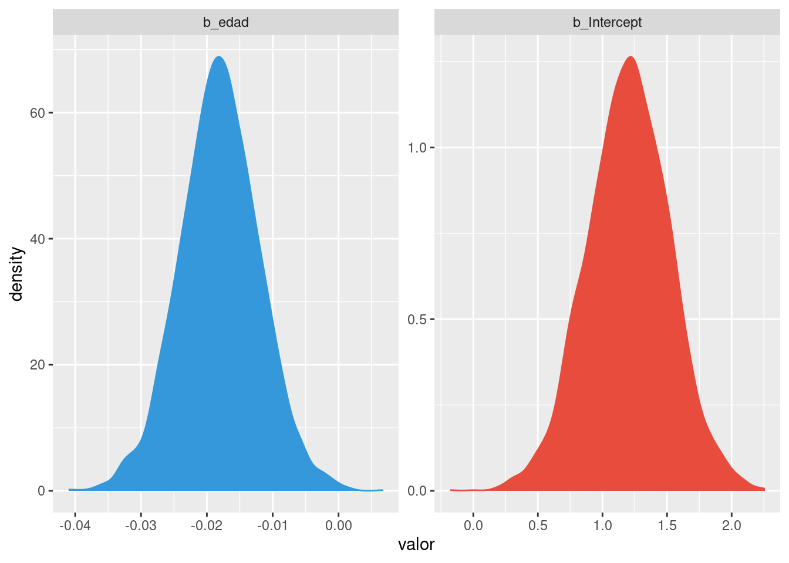
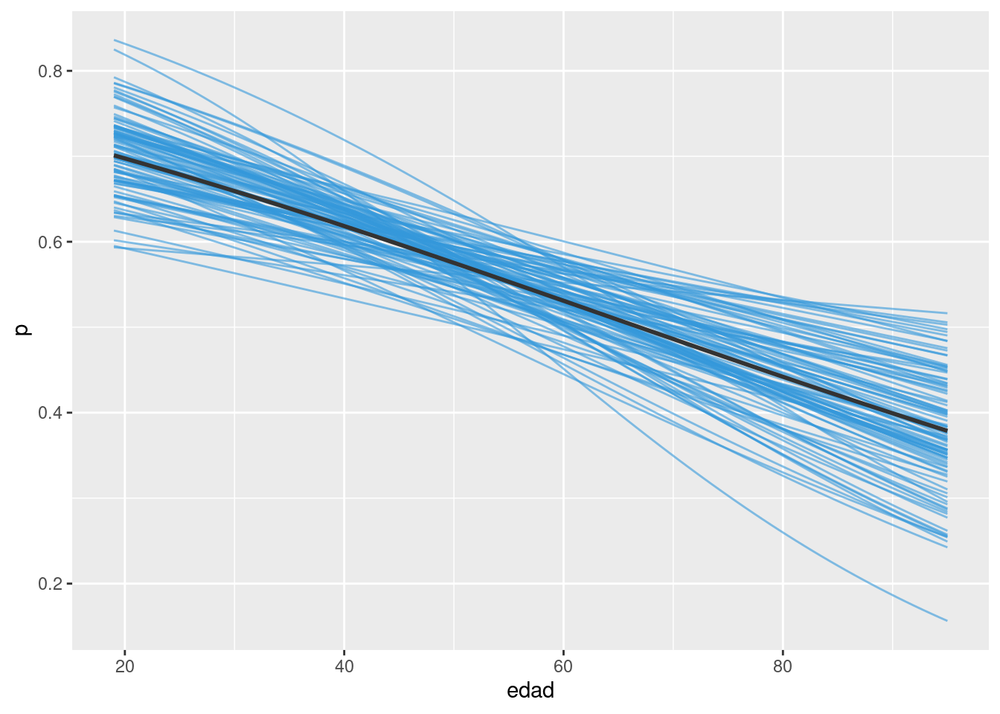
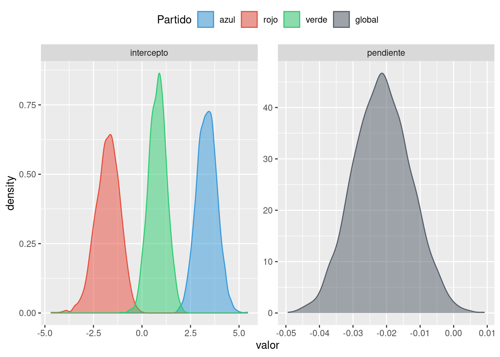
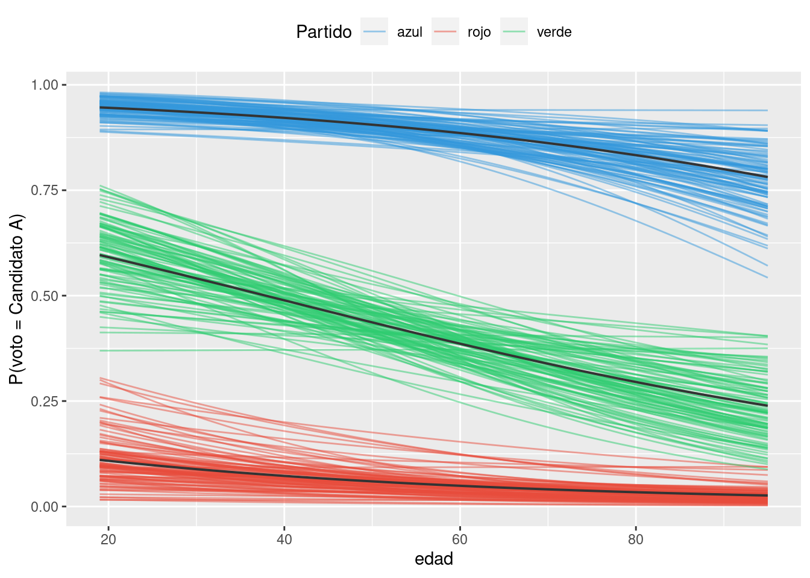
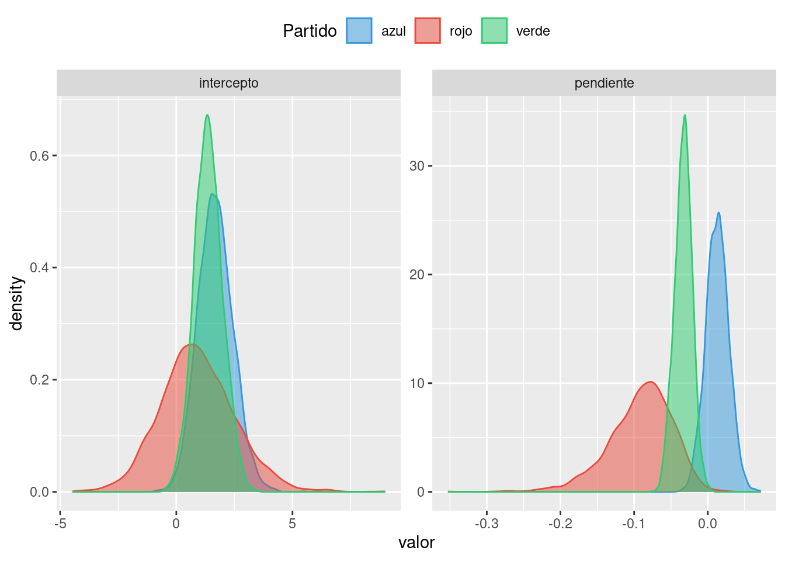
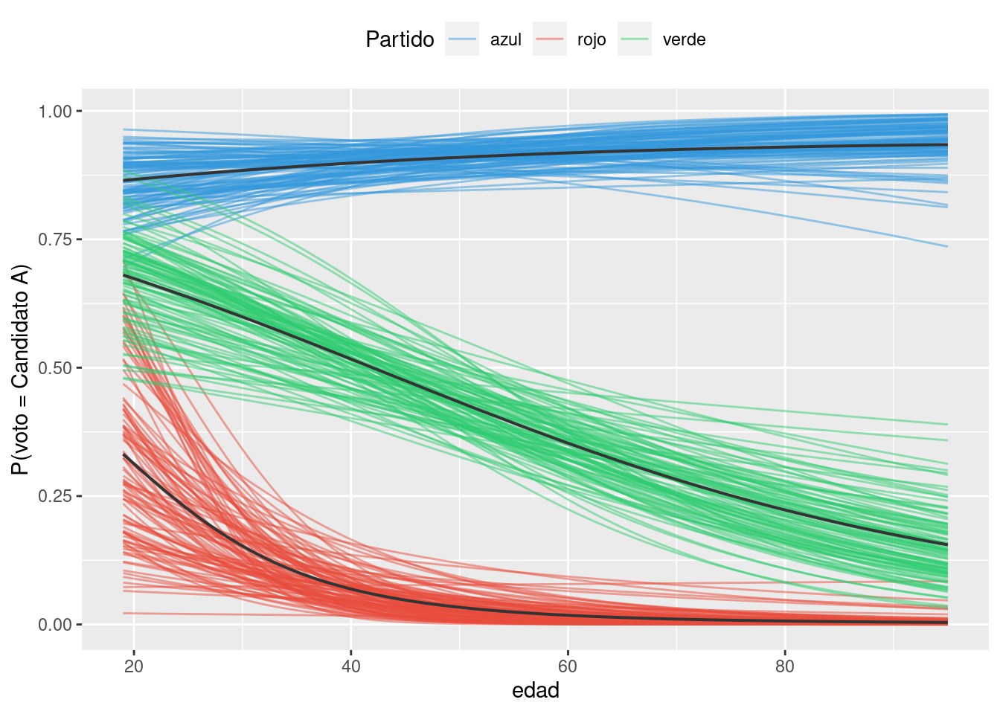

library(brms)
library(ggplot2)
library(dplyr)
url <- "https://raw.githubusercontent.com/estadisticaunr/estadistica-bayesiana/main/datos/elecciones.csv"
datos <- readr::read_csv(url)
tabla <- table(datos$voto, datos$partido)
# Distribucion conjunta
prop.table(tabla)
azul rojo verde
candidato A 0.42627346 0.01340483 0.13672922
candidato B 0.04557641 0.20375335 0.17426273# Distribucion marginal 1
# Como se componen los votos de cada candidato en terminos de las afinidades partidarias
prop.table(tabla, margin = 1) |> round(2)
azul rojo verde
candidato A 0.74 0.02 0.24
candidato B 0.11 0.48 0.41# Distribucion marginal 2
# Como se distribuyen los votos de cada partido a los candidatos
prop.table(tabla, margin = 2) |> round(2)
azul rojo verde
candidato A 0.90 0.06 0.44
candidato B 0.10 0.94 0.56# Creamos una variable indicadora para estar seguros que 'candidato A' es el éxito
datos$y <- ifelse(datos$voto == "candidato A", 1, 0)
modelo_1 <- brm(y ~ 1 + edad, datos, family = "bernoulli", refresh = 0)
modelo_2 <- brm(y ~ 0 + partido + edad, datos, family = "bernoulli", refresh = 0)
modelo_3 <- brm(y ~ 0 + partido + edad:partido, datos, family = "bernoulli", refresh = 0)
df_draws_1 <- as.data.frame(modelo_1$fit) |> select(-lprior, -lp__)
df_draws_2 <- as.data.frame(modelo_2$fit) |> select(-lprior, -lp__)
df_draws_3 <- as.data.frame(modelo_3$fit) |> select(-lprior, -lp__)
edad_min <- min(datos$edad)
edad_max <- max(datos$edad)
edad_grid <- seq(edad_min, edad_max, length.out = 100)
partidos <- unique(datos$partido)
# ~~~~~~~~~~~~~~~~~~~~~~~~~~~~~~~~~~~~~~~~~~~~~~~~~~~~~~~~~~~~~~~~~~~~~~~~~~~~~~
# Modelo 1
# ~~~~~~~~~~~~~~~~~~~~~~~~~~~~~~~~~~~~~~~~~~~~~~~~~~~~~~~~~~~~~~~~~~~~~~~~~~~~~~
summary(modelo_1) Family: bernoulli
Links: mu = logit
Formula: y ~ 1 + edad
Data: datos (Number of observations: 373)
Draws: 4 chains, each with iter = 2000; warmup = 1000; thin = 1;
total post-warmup draws = 4000
Population-Level Effects:
Estimate Est.Error l-95% CI u-95% CI Rhat Bulk_ESS Tail_ESS
Intercept 1.19 0.34 0.54 1.86 1.00 4128 2709
edad -0.02 0.01 -0.03 -0.01 1.00 4440 2763
Draws were sampled using sampling(NUTS). For each parameter, Bulk_ESS
and Tail_ESS are effective sample size measures, and Rhat is the potential
scale reduction factor on split chains (at convergence, Rhat = 1).df_draws_1 |>
tidyr::pivot_longer(
everything(),
names_to = "coeficiente",
values_to = "valor"
) |>
ggplot() +
geom_density(aes(x = valor, color = coeficiente, fill = coeficiente)) +
scale_color_manual(values = c("#3498db", "#e74c3c")) +
scale_fill_manual(values = c("#3498db", "#e74c3c")) +
facet_wrap(~ coeficiente, scales = "free") +
theme(legend.position = "none")
df_new <- data.frame(edad = edad_grid)
df_mean_1 <- data.frame(
p = as.vector(posterior_epred(modelo_1, newdata = df_new)),
edad = rep(edad_grid, each = 4000),
draw = rep(1:4000, times = length(edad_grid))
)
ggplot(df_mean_1[df_mean_1$draw %in% sample(4000, 100), ]) +
geom_line(
aes(x = edad, y = p, group = draw),
alpha = 0.6,
color = "#3498db"
) +
geom_line(
aes(x = edad, y = p),
color = "grey20",
linewidth = 1,
data = df_mean_1 |> group_by(edad) |> summarise(p = mean(p))
)
labs(y = "P(voto = Candidato A)")$y
[1] "P(voto = Candidato A)"
attr(,"class")
[1] "labels"# ~~~~~~~~~~~~~~~~~~~~~~~~~~~~~~~~~~~~~~~~~~~~~~~~~~~~~~~~~~~~~~~~~~~~~~~~~~~~~~
# Modelo 2
# ~~~~~~~~~~~~~~~~~~~~~~~~~~~~~~~~~~~~~~~~~~~~~~~~~~~~~~~~~~~~~~~~~~~~~~~~~~~~~~
summary(modelo_2) Family: bernoulli
Links: mu = logit
Formula: y ~ 0 + partido + edad
Data: datos (Number of observations: 373)
Draws: 4 chains, each with iter = 2000; warmup = 1000; thin = 1;
total post-warmup draws = 4000
Population-Level Effects:
Estimate Est.Error l-95% CI u-95% CI Rhat Bulk_ESS Tail_ESS
partidoazul 3.34 0.52 2.33 4.39 1.01 1153 1598
partidorojo -1.78 0.65 -3.18 -0.62 1.00 1301 1465
partidoverde 0.80 0.47 -0.14 1.72 1.00 1073 1378
edad -0.02 0.01 -0.04 -0.00 1.01 1016 1378
Draws were sampled using sampling(NUTS). For each parameter, Bulk_ESS
and Tail_ESS are effective sample size measures, and Rhat is the potential
scale reduction factor on split chains (at convergence, Rhat = 1).df_draws_2_long <- df_draws_2 |>
tidyr::pivot_longer(
everything(),
names_to = "coeficiente",
values_to = "valor"
) |>
mutate(
grupo = case_when(
coeficiente == "b_partidoazul" ~ "intercepto",
coeficiente == "b_partidorojo" ~ "intercepto",
coeficiente == "b_partidoverde" ~ "intercepto",
coeficiente == "b_edad" ~ "pendiente"
),
partido = case_when(
coeficiente == "b_partidoazul" ~ "azul",
coeficiente == "b_partidorojo" ~ "rojo",
coeficiente == "b_partidoverde" ~ "verde",
coeficiente == "b_edad" ~ "global"
)
) |>
mutate(
partido = factor(
partido, levels = c("azul", "rojo", "verde", "global"), ordered = TRUE
)
)
head(df_draws_2_long)# A tibble: 6 × 4
coeficiente valor grupo partido
<chr> <dbl> <chr> <ord>
1 b_partidoazul 3.00 intercepto azul
2 b_partidorojo -1.97 intercepto rojo
3 b_partidoverde 0.0822 intercepto verde
4 b_edad -0.00933 pendiente global
5 b_partidoazul 3.00 intercepto azul
6 b_partidorojo -2.59 intercepto rojo ggplot(df_draws_2_long) +
geom_density(aes(x = valor, color = partido, fill = partido), alpha = 0.5) +
scale_color_manual(
values = c("#3498db", "#e74c3c","#2ecc71", "#535c68"),
name = "Partido"
) +
scale_fill_manual(
values = c("#3498db", "#e74c3c","#2ecc71", "#535c68"),
name = "Partido"
) +
facet_wrap(~ grupo, scales = "free") +
theme(legend.position = "top")
df_new <- data.frame(
edad = rep(edad_grid, 3),
partido = rep(partidos, each = length(edad_grid))
)
df_mean_2 <- data.frame(
p = as.vector(posterior_epred(modelo_2, newdata = df_new)),
edad = rep(rep(edad_grid, each = 4000), times = 3),
partido = rep(partidos, each = 4000 * length(edad_grid)),
draw = rep(1:4000, times = length(edad_grid) * length(partidos))
)
ggplot(df_mean_2[df_mean_2$draw %in% sample(4000, 100), ]) +
geom_line(
aes(
x = edad,
y = p,
group = interaction(draw, partido),
color = partido
),
alpha = 0.5
) +
geom_line(
aes(x = edad, y = p, group = partido),
linewidth = 0.7,
color = "grey20",
data = df_mean_2 |> group_by(edad, partido) |> summarise(p = mean(p))
) +
scale_color_manual(
values = c("#3498db", "#e74c3c","#2ecc71", "#535c68"),
name = "Partido"
) +
labs(y = "P(voto = Candidato A)") +
theme(legend.position = "top")
# ~~~~~~~~~~~~~~~~~~~~~~~~~~~~~~~~~~~~~~~~~~~~~~~~~~~~~~~~~~~~~~~~~~~~~~~~~~~~~~
# Modelo 3
# ~~~~~~~~~~~~~~~~~~~~~~~~~~~~~~~~~~~~~~~~~~~~~~~~~~~~~~~~~~~~~~~~~~~~~~~~~~~~~~
summary(modelo_3) Family: bernoulli
Links: mu = logit
Formula: y ~ 0 + partido + edad:partido
Data: datos (Number of observations: 373)
Draws: 4 chains, each with iter = 2000; warmup = 1000; thin = 1;
total post-warmup draws = 4000
Population-Level Effects:
Estimate Est.Error l-95% CI u-95% CI Rhat Bulk_ESS Tail_ESS
partidoazul 1.67 0.70 0.35 3.08 1.00 2196 1985
partidorojo 0.94 1.62 -2.07 4.31 1.00 1926 1499
partidoverde 1.41 0.61 0.23 2.63 1.00 2226 1710
partidoazul:edad 0.01 0.01 -0.01 0.04 1.00 2116 1945
partidorojo:edad -0.09 0.04 -0.19 -0.02 1.00 1907 1610
partidoverde:edad -0.03 0.01 -0.06 -0.01 1.00 2268 1694
Draws were sampled using sampling(NUTS). For each parameter, Bulk_ESS
and Tail_ESS are effective sample size measures, and Rhat is the potential
scale reduction factor on split chains (at convergence, Rhat = 1).df_draws_3_long <- df_draws_3 |>
tidyr::pivot_longer(
everything(),
names_to = "coeficiente",
values_to = "valor"
) |>
mutate(
grupo = case_when(
coeficiente == "b_partidoazul" ~ "intercepto",
coeficiente == "b_partidorojo" ~ "intercepto",
coeficiente == "b_partidoverde" ~ "intercepto",
coeficiente == "b_partidoazul:edad" ~ "pendiente",
coeficiente == "b_partidorojo:edad" ~ "pendiente",
coeficiente == "b_partidoverde:edad" ~ "pendiente"
),
partido = case_when(
coeficiente %in% c("b_partidoazul", "b_partidoazul:edad")~ "azul",
coeficiente %in% c("b_partidorojo", "b_partidorojo:edad") ~ "rojo",
coeficiente %in% c("b_partidoverde", "b_partidoverde:edad") ~ "verde",
)
) |>
mutate(
partido = factor(
partido, levels = c("azul", "rojo", "verde", "global"), ordered = TRUE
)
)
head(df_draws_3_long)# A tibble: 6 × 4
coeficiente valor grupo partido
<chr> <dbl> <chr> <ord>
1 b_partidoazul 1.41 intercepto azul
2 b_partidorojo -0.150 intercepto rojo
3 b_partidoverde 2.37 intercepto verde
4 b_partidoazul:edad 0.0112 pendiente azul
5 b_partidorojo:edad -0.0659 pendiente rojo
6 b_partidoverde:edad -0.0537 pendiente verde ggplot(df_draws_3_long) +
geom_density(aes(x = valor, color = partido, fill = partido), alpha = 0.5) +
scale_color_manual(
values = c("#3498db", "#e74c3c","#2ecc71"),
name = "Partido"
) +
scale_fill_manual(
values = c("#3498db", "#e74c3c", "#2ecc71"),
name = "Partido"
) +
facet_wrap(~ grupo, scales = "free") +
theme(legend.position = "top")
df_new <- data.frame(
edad = rep(edad_grid, 3),
partido = rep(partidos, each = length(edad_grid))
)
df_mean_3 <- data.frame(
p = as.vector(posterior_epred(modelo_3, newdata = df_new)),
edad = rep(rep(edad_grid, each = 4000), times = 3),
partido = rep(partidos, each = 4000 * length(edad_grid)),
draw = rep(1:4000, times = length(edad_grid) * length(partidos))
)
ggplot(df_mean_3[df_mean_3$draw %in% sample(4000, 100), ]) +
geom_line(
aes(
x = edad,
y = p,
group = interaction(draw, partido),
color = partido
),
alpha = 0.5
) +
geom_line(
aes(x = edad, y = p, group = partido),
linewidth = 0.7,
color = "grey20",
data = df_mean_3 |> group_by(edad, partido) |> summarise(p = mean(p))
) +
scale_color_manual(
values = c("#3498db", "#e74c3c","#2ecc71", "#535c68"),
name = "Partido"
) +
labs(y = "P(voto = Candidato A)") +
theme(legend.position = "top")
# ~~~~~~~~~~~~~~~~~~~~~~~~~~~~~~~~~~~~~~~~~~~~~~~~~~~~~~~~~~~~~~~~~~~~~~~~~~
# Algunos calculos de probabilidades...
mean(df_draws_3["b_partidoazul:edad"] > df_draws_3["b_partidorojo:edad"])[1] 0.99625mean(df_draws_3["b_partidoazul:edad"] > df_draws_3["b_partidoverde:edad"])[1] 0.993mean(df_draws_3["b_partidoverde:edad"] > df_draws_3["b_partidorojo:edad"])[1] 0.9145mean(df_draws_3["b_partidoazul:edad"] > 0)[1] 0.818mean(df_draws_3["b_partidorojo:edad"] < 0)[1] 0.99325mean(df_draws_3["b_partidoverde:edad"] < 0)[1] 0.99825# Comparando los modelos con LOO... ¿qué significa?
loo_1 <- loo(modelo_1)
loo_2 <- loo(modelo_2)
loo_3 <- loo(modelo_3)
loo_compare(loo_1, loo_2, loo_3) elpd_diff se_diff
modelo_3 0.0 0.0
modelo_2 -2.0 3.4
modelo_1 -98.6 11.8